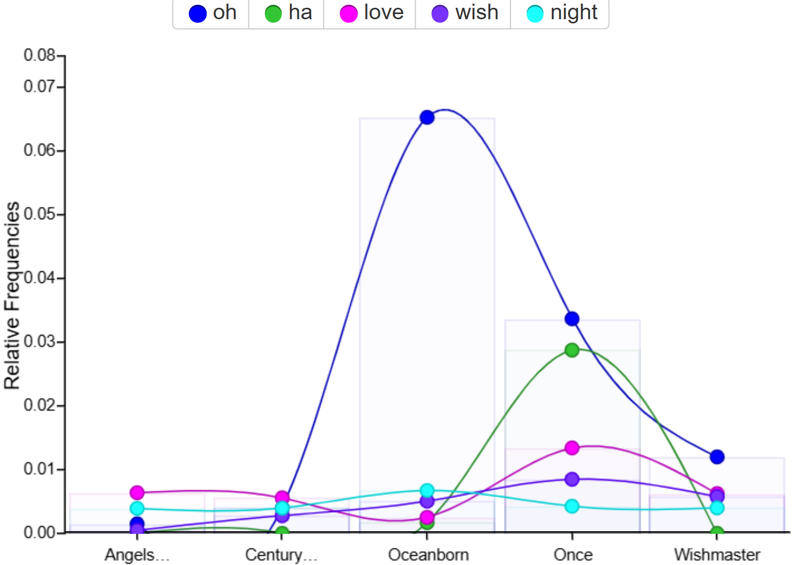
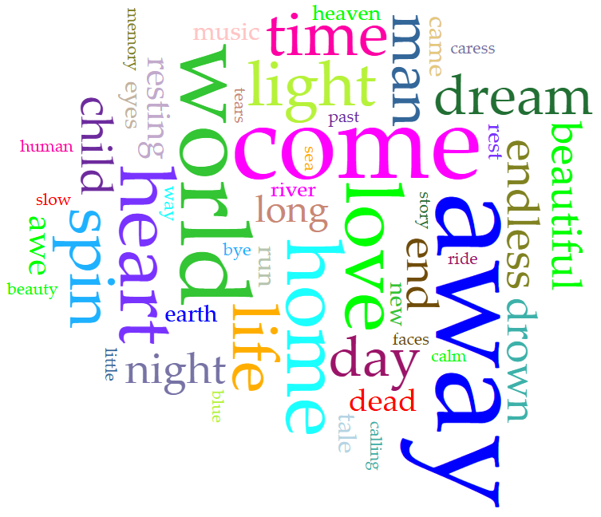

Nick Grundman's Very Professional Portfolio
Nick Grundman's Very Professional Portfolio
Nick Grundman's Very Professional Portfolio
Nick Grundman's Very Professional Portfolio



The worldcloud shows "oh," which is used often, but that is skewed by one song that features the word 140 times. Besides that, many emotion-filled and visually descriptive words like "night," "love," "wish," "world," "heart," "dream," and "soul" feature heavily.



Despite swapping singers 3 times, Nightwish has had only one primary songwriter: the band's founder and keyboardist Tuomas Holopainen. He has always held an outsized role in the songwriting process, as the band itself began and continues as his personal passion project. Tuomas has been a full-time musician since the formation of Nightwish in 1997, which supposedly took place "around a campfire". He has said his composing is inspired by harmonic film scores and can take up to a year to write songs for each album before collaborating with the rest of the band and asking for feedback.
Marko Hietala served as the male dual singer in many songs from Century Child (2001) to Human Nature (2020), but has since departed the band. His deep voice punctuates many songs, and he also assisted in songwriting on several of the songs he sung on, such as "The Crow, The Owl, and the Dove" from Imaginaerum (2011).
Because the only two men to ever write any creditable portion of the lyrics have been part of the band for almost its entire existence (Marko left before Yesterwynde, but was never a major force, and, since Yesterwynde is part of a "trilogy" along with Human Nature and Endless Forms Most Beautiful, the lyrical style is similar), almost all of the difference in style is due to the development in Tuomas' personal style and preference.
The earlier albums have less conversational and wordy songs than the later albums. This is likely due to Tuomas feeling more comfortable making more operatic-feeling and symphonic songs rather than a classic metal sound as he gains more experience songwriting. Additionally, after 2014, when Floor Jansen joined Nightwish, Tuomas gained the ability to use the classically trained opera singer for his more mystical lyrics.
You can clearly see certain songs' influence on the data with "oh" in the earlier dataset (almost entirely thanks to "Passion and the Opera" from Oceanborn (1998)) and "spin away" in the later one, which originates from "Spider Silk" from Yesterwynde (2024). Both songs have a long bridge with the same repeated lyrics.